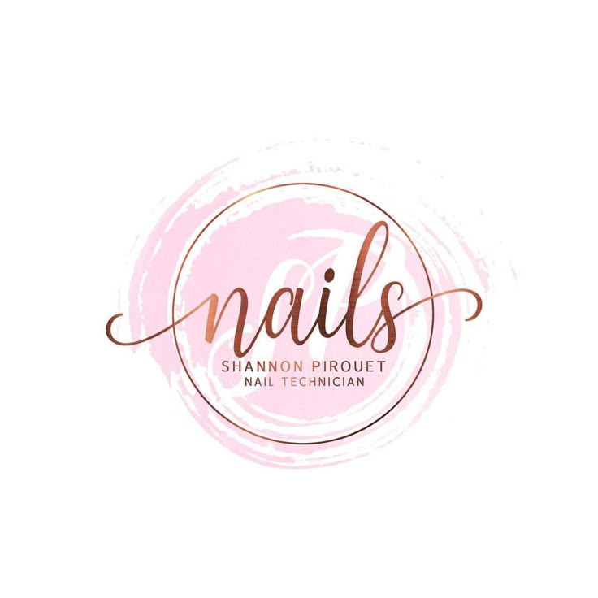

Mes Projets
Site Web de Démocratie Participative
Une plateforme permettant aux citoyens de proposer et voter des référendums.
Voir plusSite Web d'une École Imaginaire
Un site vitrine en HTML/CSS pour présenter une école fictive.
Voir plus

Base de Données pour un Salon d'Esthétique
Conception et développement d'une base de données pour gérer les clients et les prestations.
Voir plus
Application Java pour les Jeux Olympiques
Gestion des épreuves, équipes et performances des athlètes à travers une application Java.
Voir plus